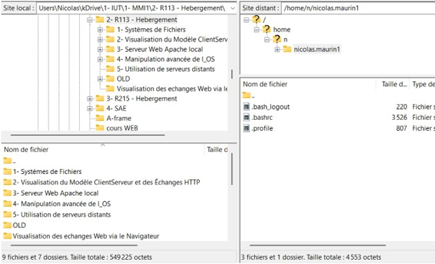

TP - BUT MMI 1 · R1.13 Hébergement
Déploiement de pages HTML sur un serveur web
Mettre ses premières pages HTML en ligne, sur l'espace web que l'IUT de Béziers met à disposition de chaque étudiant·e, en comprenant qui fait quoi entre le serveur web (HTTP) et le serveur de fichiers (FTP).
Ton espace web
L'adresse de ton site, une fois déployé :
La machine
Un seul serveur, deux services : un serveur web (HTTP, port 80) et
un serveur FTP (port 21), tous deux sur
web-mmi2.iutbeziers.fr.
Outils
Un navigateur web, un client FTP (FileZilla sur les postes de l'IUT) et les pages HTML réalisées dans les autres ressources.
Objectifs à atteindre
Sur ce TP, vous devez arriver aux objectifs suivants :
→ Serveur web
Comprendre le rôle d'un serveur web (serveur HTTP).
→ Serveur FTP
Comprendre le rôle d'un serveur FTP.
→ Déploiement
Arriver à déployer vos pages HTML sur l'espace Web qui vous est mis à disposition à l'IUT.
Déroulé
- Concepts - Client, serveur, HTTP, FTP : un schéma animé et le découpage de ton URL pour poser le vocabulaire.
-
TP · Exercice 1 - Découverte de l'environnement
et des outils : ton URL, le nom d'hôte, le client FTP, le dossier
public_html, avec un simulateur pour s'entraîner sans risque. - TP · 1.2 - Dépôt et consultation de pages HTML : déployer un petit site réalisé dans un autre module.
- Validation des objectifs - QCM corrigé et auto-évaluation.

À quoi ressemble un client FTP ?
Deux panneaux côte à côte : à gauche ton ordinateur, à droite le serveur. Déployer un site, c'est faire passer des fichiers de gauche à droite, dans le bon dossier.